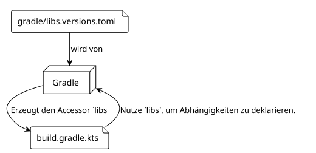
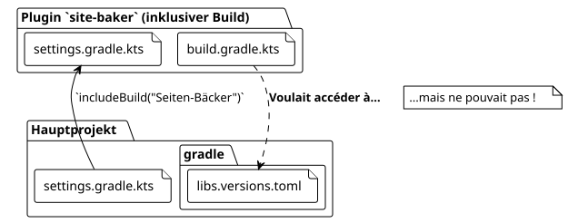

Artikel 5: Das Abenteuer des gemeinsam genutzten libs.versions.toml
Publié le 27 September 2025
Einführung
In unserem Streben, das Plugin zu erstellen`site-baker`, haben wir versucht, einen sauberen und zentralisierten Codebestand zu pflegen. Eine der besten Praktiken im modernen Gradle-Ökosystem ist die Verwendung desVersionenkatalog (libs.versions.toml) um die Abhängigkeiten zu verwalten. Aber was passiert, wenn dein Projekt komplexer wird, wie einKomposit bauenwo ein unabhängiger Build (unser Plugin) in einem anderen eingebaut werden muss?
Das war der Ort, an dem unser Abenteuer eine unerwartete Wendung nahm. Wir wollten, dass unser Plugin`site-baker`, der selbst ein Gradle-Projekt ist, verwendet denselben Versionskatalog wie unser Hauptprojekt. Dieser Artikel, der fünfte unserer Serie, erzählt, wie wir dieses Problem gelöst haben.
1. Der Versionskatalog (libs.versions.toml) : Eine Erinnerung
Die Datei`gradle/libs.versions.toml`ist eine Funktion von Gradle, die es ermöglicht, die Versionen und Koordinaten der Abhängigkeiten deines Projekts zu zentralisieren. Es ist üblicherweise in vier Abschnitte strukturiert:
-
[versions]: Definiert Aliase für Versionsnummern (z.B.kotlin = "1.9.20"). -
[libraries]`Definiert Aliase für die vollständigen Abhängigkeiten, indem die oben definierten Versionen verwendet werden (z.B.:`kotlin-stdlib = { module = "org.jetbrains.kotlin:kotlin-stdlib", version.ref = "kotlin" }). -
[bundles]: Fasst mehrere Bibliotheken unter einem einzigen Alias zusammen (z.B`jackson = ["jackson-core", "jackson-databind"]`). -
[plugins]: definiert Aliase für die Gradle-Plugins.
Sobald es definiert ist, generiert Gradle automatisch typisierte Zugriffsmethoden, was Ihr`build.gradle.kts`viel lesbarer:
dependencies {
// Au lieu de : implementation("org.jetbrains.kotlin:kotlin-stdlib:1.9.20")
implementation(libs.kotlin.stdlib)
}
2. Das Problem : Ein zusammengesetzter Build und zwei getrennte Welten
unsere Projektstruktur ist einVerbund herstellen. Das Hauptprojekt (thymeleaf.cheroliv.com) enthält das Projekt des Plugins (site-baker) über den Befehl`includeBuild("site-baker")in der Datei`settings.gradle.kts.
.

Das Problem ist, dass standardmäßig ein eingebundener Build eingetrennte Welt. Es hat seine eigene Konfiguration, seinen eigenen Lebenszyklus, und es sieht die Datei nicht`libs.versions.toml`des Hauptbuilds. Unser`plugin/build.gradle.kts`versuchte zu verwenden`libs.plugins.kotlin.jvm`, aber das Objekt`libs`Es wurde nicht aus der richtigen TOML-Datei generiert, was Build-Fehler verursachte.
3. Die Lösung: Teile die Abhängigkeitsauflösung
Nach mehreren Recherchen stellte sich die Lösung als eine von Gradle speziell für diesen Fall entwickelte Funktion heraus:`dependencyResolutionManagement`.
In der Datei`settings.gradle.kts` du build inklusiv(site-baker/settings.gradle.kts), wir können Gradle sagen, wo es den Versionskatalog finden soll, den es verwenden soll.
Hier ist die Konfiguration, die wir hinzugefügt haben zu`site-baker/settings.gradle.kts`:
// site-baker/settings.gradle.kts
dependencyResolutionManagement {
repositoriesMode.set(RepositoriesMode.FAIL_ON_PROJECT_REPOS)
repositories {
gradlePluginPortal()
mavenCentral()
}
versionCatalogs {
create("libs") {
from(files("../gradle/libs.versions.toml"))
}
}
}
rootProject.name = "site-baker"
include("plugin")Analysieren wir den entscheidenden Teil :
versionCatalogs {
create("libs") { // Crée un catalogue nommé 'libs'
from(files("../gradle/libs.versions.toml")) // En utilisant ce fichier
}
}-
create("libs"): Wir erklären einen Versionskatalog, der über das Alias zugänglich sein wird`libs`. -
from(files("../gradle/libs.versions.toml"))`Das ist die Magie. Wir teilen Gradle mit, dass die Quelle dieses Katalogs die TOML-Datei im Verzeichnis`gradledu Elternprojekt(../)
Mit dieser Konfiguration, der Build`site-baker`Er weiß jetzt, dass er den Versionskatalog des Hauptprojekts verwenden muss. Das Objekt`libs`wird korrekt generiert, und die Abhängigkeiten werden wie erwartet aufgelöst.
4. Schlussfolgerung: Die Macht gut verwalteter Composite-Builds
Diese Erfahrung war lehrreich. Der Versionskatalog ist ein fantastisches Werkzeug für die Wartbarkeit, aber sein Verhalten in Szenarien mit zusammengesetzten Builds ist nicht immer intuitiv.
Der Schlüssel ist, sich daran zu erinnern, dass ein inkludierter Build weiterhin ein unabhängiger Build bleibt. Um Konfigurationen wie den Versionskatalog zu teilen, müssen Sie die expliziten Mechanismen verwenden, die von Gradle bereitgestellt werden, wie den Block`dependencyResolutionManagement`in`settings.gradle.kts`.
Durch das Lösen dieses Problems haben wir nicht nur unseren Build sauberer gemacht, sondern auch die Konsistenz unseres Projekts erhöht, indem wir sicherstellten, dass das Plugin und das Hauptprojekt eine einzige Wahrheitsquelle für ihre Abhängigkeiten teilen.
Im nächsten Artikel werden wir unser Plugin weiter bereichern, indem wir komplexere Aufgaben hinzufügen, jetzt, da unsere Abhängigkeitsverwaltung solide und zentralisiert ist.